Aiden localhost:8080 - 2026-06-02
Top issue: 任务状态在旧版/新版间不一致，任务详情面板显示错误。本地环境有多个 console error 和 API 401 问题。
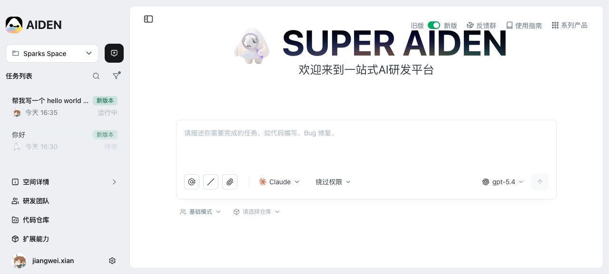
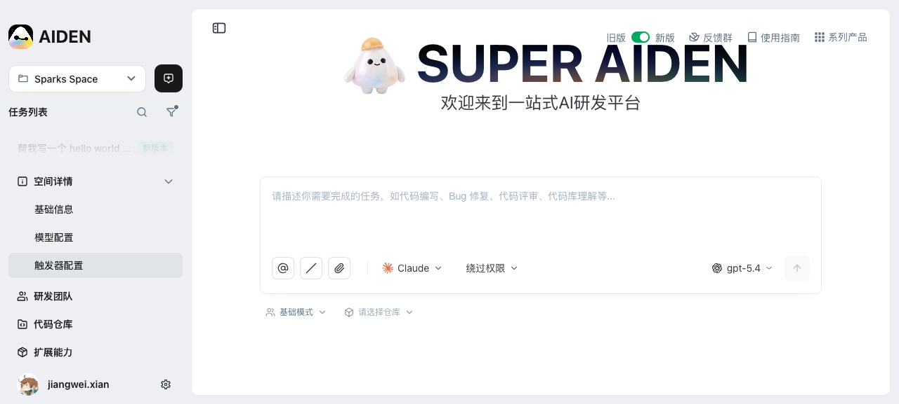
点击后侧边栏高亮选中状态，无独立面板弹出。
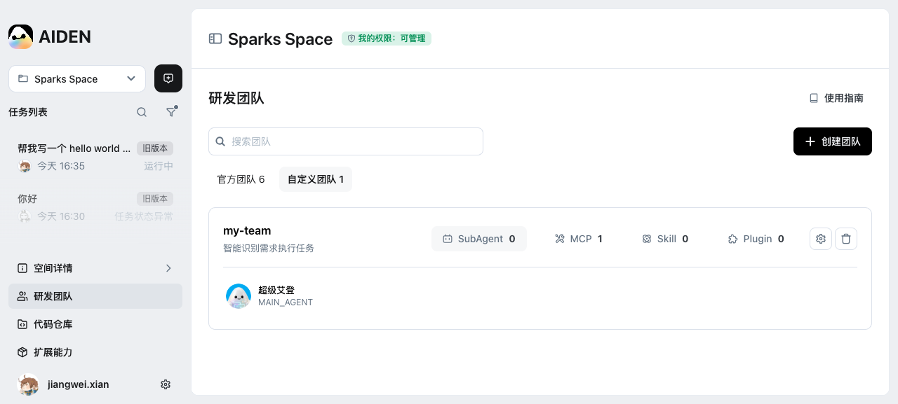
切换到团队视图，右侧面板正常显示。注意：任务 Tag 从"新版本"变为"旧版本"，部分任务状态从"待命"变为"任务状态异常"。
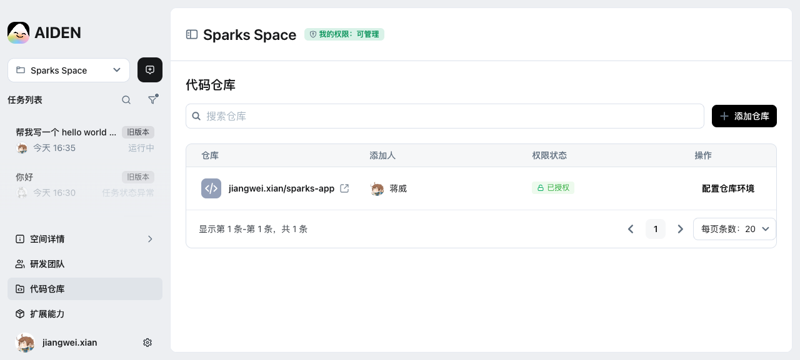
展开仓库列表面板，有搜索框和"添加仓库"按钮，表格列显示仓库名/添加人/权限/操作。
展开 Marketplace 面板，Plugin(0)/Skill(0)/MCP(1) 三个 tab，有搜索和添加按钮。
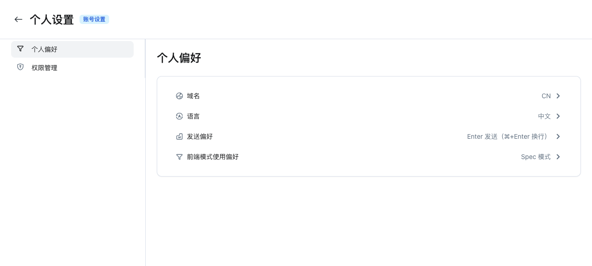
跳转设置页，显示域名(CN)/语言(中文)/发送偏好(Enter)/前端模式(Spec 模式)四项配置。
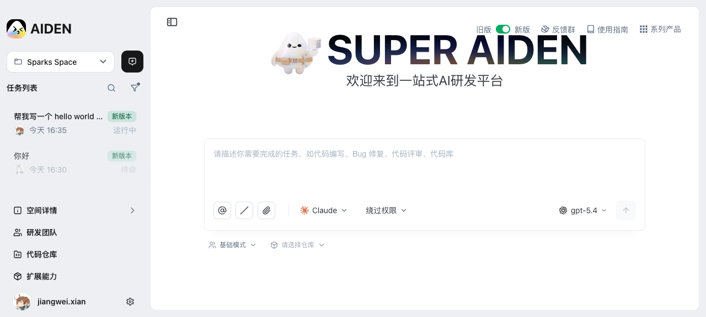
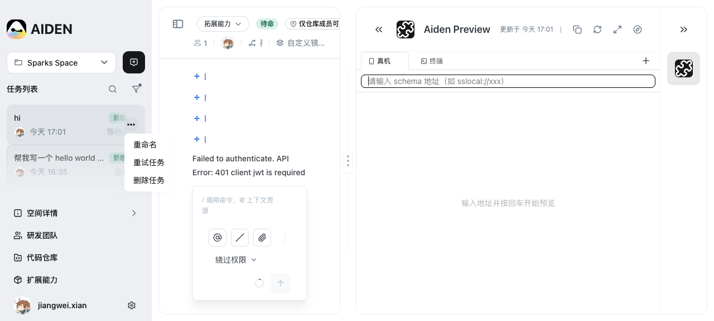
弹出菜单含：重命名、重试任务、删除任务。
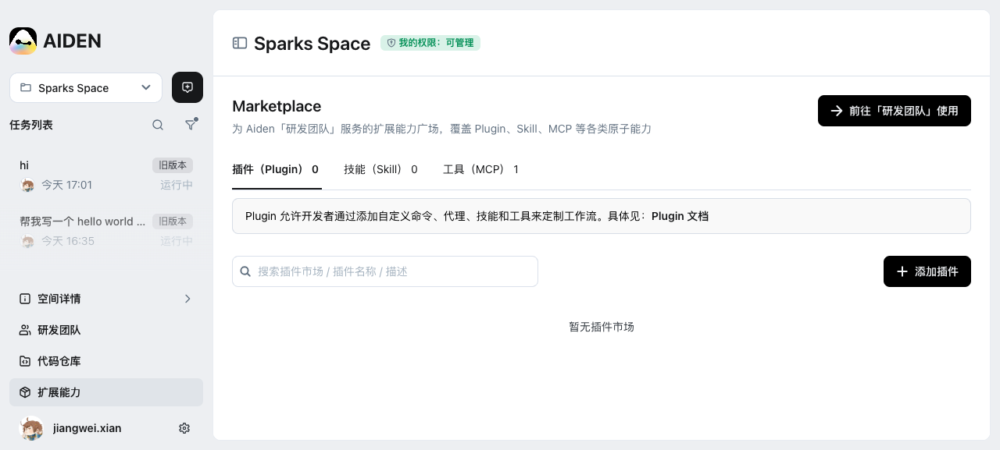
页面标题变更但右侧面板显示 Marketplace 而非任务详情。见 ISSUE-S1。
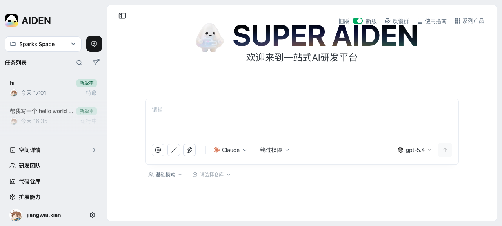
新/旧版本切换正常工作。但状态数据在两版本间不一致（见 ISSUE-S2）。
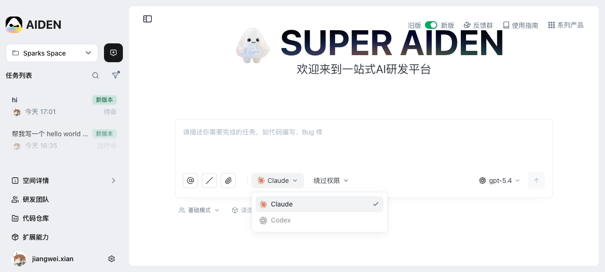
下拉菜单显示 Claude 和 Codex(disabled) 两个选项。
展开模式选择面板，官方团队(6)/自定义团队(1)，含 Spec/前端Web/基础/服务端/前端Lynx 等模式。
下拉搜索框 + 显示空间内仓库 jiangwei.xian/sparks-app。
点击任务列表中的任务链接后，页面标题正确变更（如"帮我写一个 hello world 函数"），但右侧面板显示的是 Marketplace/扩展能力 而非任务详情。用户无法查看任务内容和对话。
检查任务路由切换时的面板状态管理，确保右侧面板加载正确的任务详情组件。
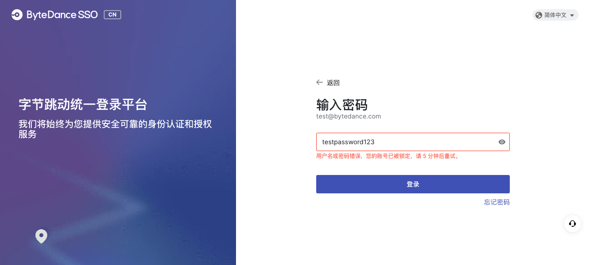
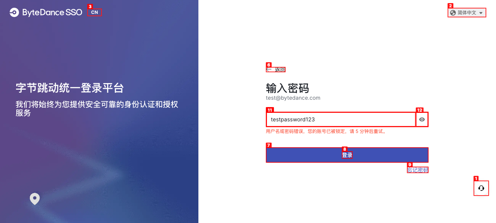
SSO 密码登录失败时（API 返回 400 code 10600 "用户名或密码错误，账号已被锁定"），UI 上无任何错误提示。用户看到的仍然是空白密码输入框，无法感知登录失败原因。
在密码登录表单下方显示 API 返回的错误消息，或使用 toast 提示。
同一任务在"新版本"视图显示"待命"，切换到"旧版本"视图后显示"任务状态异常"。状态数据应该是一致的，切换版本只是 UI 展示差异，不应改变任务实际状态。
排查新旧版本是否使用了不同的 API endpoint 或状态映射逻辑，统一状态判断。
发送消息后 ChatKit 连续重试 10 次（514ms → 35s 指数退避），UI 持续显示 "Processing..."。重试耗尽后无明确的失败/超时提示。
重试耗尽后显示明确的错误状态（如"发送失败，点击重试"），而不是静默停留在 Processing。
Console 报错：ENOENT: no such file or directory, realpath '/Users/bytedance/out_files/artifacts'。workspace snapshot 功能引用了不存在的本地路径。
检查 workspace 配置中 artifacts 路径是否正确设置，或添加路径不存在时的 fallback 处理。
SSO 登录流程中 console 以彩色格式输出了 RSA public key 和 rsa_token UUID。生产环境不应暴露这些认证内部数据。
将认证调试日志移至 debug flag 控制下，生产构建时移除。
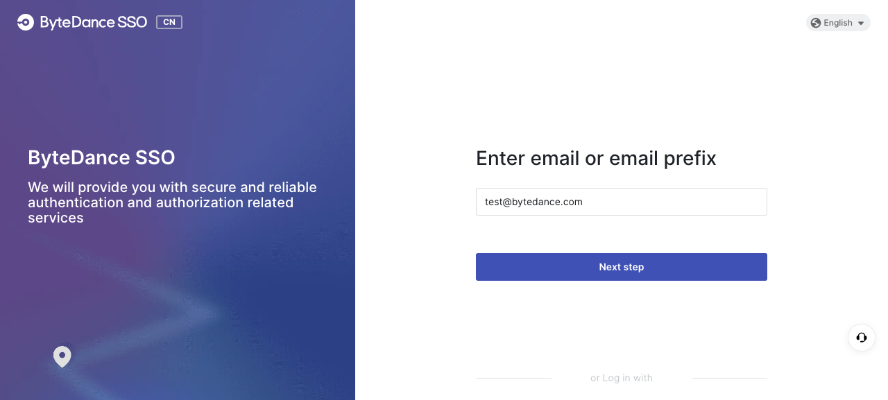
SSO 登录页切换到 English 后，页脚的京公网安备和京ICP备链接完全消失。中文模式下正常显示。
确保 footer 链接在所有语言模式下均渲染。
Console 报错：Failed to load run session jsonl {runId: "451259", error: session not found}。历史任务的 session 数据可能被清理但引用未移除。
对 session not found 添加 graceful fallback，避免 console error。
Console 记录了 api_error_status: 401 的 result message，但前端未做 token 过期处理（如跳转重新登录）。
在 ChatKit 拦截 401 状态码，触发重新认证流程。